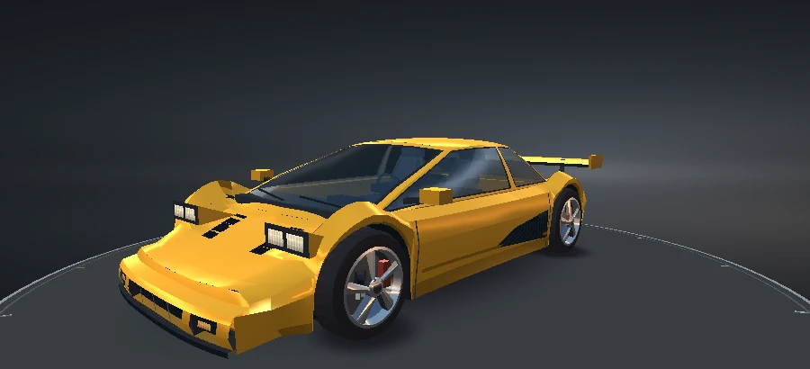
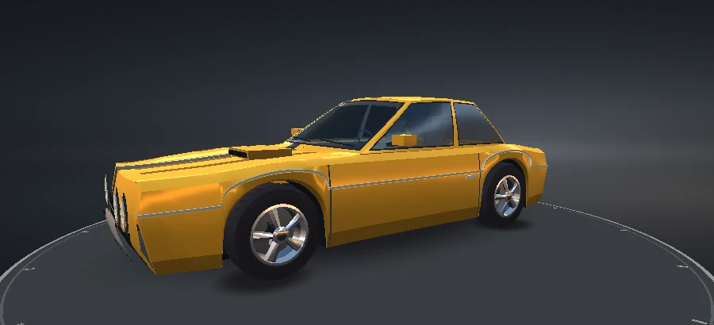
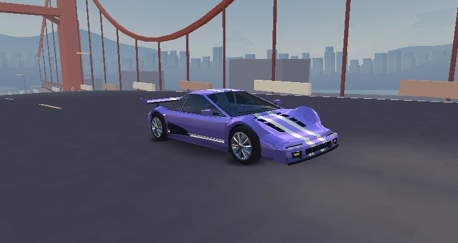
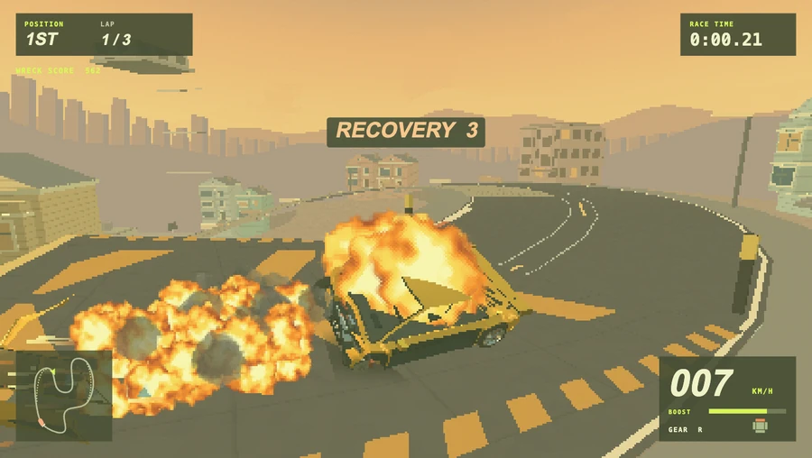
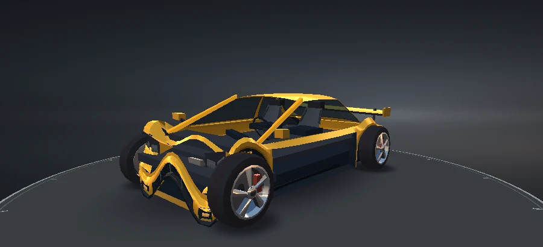
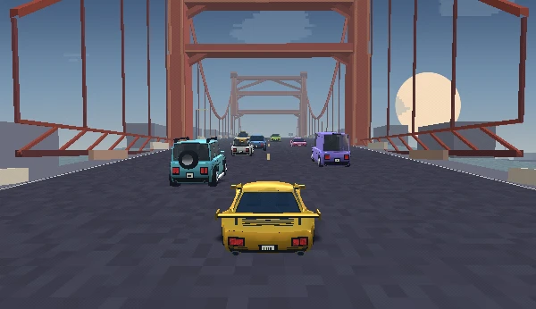
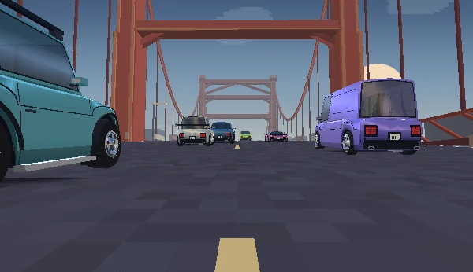
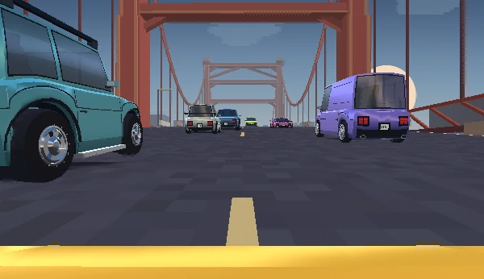

Hammerhead V8
A long bonnet and quad lamps lead a broad, heavy shell. The extra mass pays off in a pack of cars.
San Francisco stunt racing
Launch off hilltops. Cut through the docks.
Bring what’s left
of your car across the line.
West Coast Motor Pool
Thirty original machines share the grid. Look past the paint and you’ll find different wheelbases, rooflines and suspension setups. Pick a class and inspect the bodywork. In the game, start with factory paint or club stripes and earn five more liveries in the cups.

Exotic
Pop-up lamps, a low nose and a broad rear wing give the Spectre its wedge profile. Its light bodywork makes a clean exit worth more than a hard shove.
Coachwork close-ups
Each body is drawn from cross-sections along its length. Axle spacing, wheel radius, cabin shape and lamp assemblies change from model to model. The front wheels steer and spin around their own hubs.
A long bonnet and quad lamps lead a broad, heavy shell. The extra mass pays off in a pack of cars.
The open cage and exposed wheels strip the buggy down to its essentials. It’s light in the air and vulnerable in a side impact.
A tall cab over a short frame puts nearly 2.6 tonnes on the road. Turn in early and let the reinforced body take the knocks.
Championship paint booth
Finish the City Lights Cup to unlock Offset.

The course book
Hill streets give way to quarry terraces, container yards and coastal forest. Each course has two shortcut routes. Both still have to bring you back through the checkpoints.

Driving & destruction
Build boost with clean slides, airtime and close passes. A fast approach can carry you over a gap, but you still have to put four wheels down on the far side.


Impact study
Front, rear, sides and roof take damage separately. A front-left impact folds the bonnet and pushes the flank inward. Bumpers, doors and wheels can break away. Pause and open Photo mode to orbit the wreck and save a picture of your own.

Driver’s manual
Hold the handbrake to slide through a broad corner. Straighten up and spend boost on the exit. The route arrow gives the distance to the next jump, shortcut or bend.



Steer with your left thumb and hold GAS with your right. Slide between the arrows to change direction. Slide from Gas to Boost or Drift to keep accelerating. Hold Brake to slow down and reverse. Tap View to change camera or Recover to get back on the road.
Race rules
All 30 cars and 20 tracks are open from the start in Free Race. Records, ghosts and cup progress save to this browser.
West Coast Arcade
The cars, city and sound run in one HTML file. Start the game here, open it full page, or download a copy to play offline.